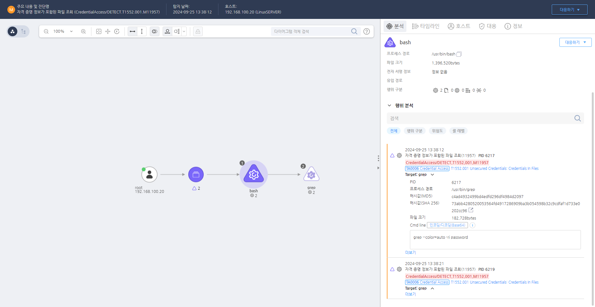

T1552.001.03 Unsecured Credentials: Credentials In Files
D3FEND
MITRE ATT&CK 액션을 기준으로 대응 방안을 작성
Detection
grep명령어로 password 등 자격 증명 관련 문자열 검색
Detection(EDR)

Response
- 명령 : 특정 파일에 접근하기 위해 사용되는 명령어 키워드 모니터링
- 파일 : 자격 증명 정보가 포함될 특정 파일 모니터링
- 프로세스 감시 : 안전하지 않게 저장된 자격 증명 파일 여부 확인 및 해당 파일에 접근하는 새로운 프로세스 감시
Mitigations
하드코딩된 자격 증명 제거 (M1030 - Credential Dumping Prevention)
- 하드코딩된 자격 증명을 소스 코드에서 제거하고, 대신 환경 변수나 보안 자격 증명 저장소를 사용하여 자격 증명을 동적으로 로드하도록 설정
- 애플리케이션 구성 파일에 자격 증명이 포함되지 않도록 하고, 암호화된 자격 증명 저장소를 사용하여 자격 증명을 안전하게 관리
- 암호화된 비밀 관리 시스템(예: Vault, AWS Secrets Manager)을 사용하여 자격 증명을 안전하게 저장하고 애플리케이션에서 사용할 수 있도록 설정
자격 증명 관리 정책 수립 (M1031 - Network Segmentation)
- 자격 증명 관리 정책을 수립하여 개발자가 비밀번호나 API 키와 같은 민감한 정보를 코드에 하드코딩하지 않도록 교육
- 자격 증명 관리 시스템을 사용하여 모든 자격 증명은 중앙화된 안전한 위치에서 관리하고, 자동화된 암호화 및 키 관리를 사용하여 보안성을 강화
- 정기적인 코드 리뷰 및 보안 감사를 통해 하드코딩된 자격 증명이 없는지 확인
보안 도구 활용 (M1032 - Application Layer Filtering)
- 정적 분석 도구(Static Application Security Testing, SAST)와 동적 분석 도구(Dynamic Application Security Testing, DAST)를 사용하여 하드코딩된 자격 증명을 포함하는 코드 패턴을 자동으로 탐지
- 보안 도구를 활용하여 애플리케이션과 소스 코드 내에서 자격 증명이 하드코딩된 부분을 검색하고 알림을 통해 이를 해결
환경 변수 및 비밀 관리 시스템 사용 (M1030 - Credential Dumping Prevention)
- 환경 변수 또는 비밀 관리 시스템을 사용하여 애플리케이션 실행 시 자격 증명을 동적으로 로드하도록 설정
- IAM(Identity and Access Management) 시스템을 통해 자격 증명의 접근 제어를 설정하고, 최소 권한 원칙을 적용하여 자격 증명에 대한 불필요한 접근을 차단
- API 키 및 비밀번호를 암호화하여 저장하고, 이를 사용해야 할 때만 애플리케이션이 안전하게 읽을 수 있도록 설정
보안 교육 및 인식 향상 (M1041 - Data Loss Prevention)
- 보안 교육을 통해 개발자들에게 하드코딩된 자격 증명의 위험성을 알리고, 안전한 자격 증명 관리 방법에 대해 교육
- 개발 프로세스에 보안 검사를 통합하여 자격 증명이나 민감한 정보가 코드에 포함되지 않도록 지속적으로 점검
- 민감 정보를 코드에 포함하지 않도록 하는 보안 기준을 마련하고 이를 준수하도록 개발 환경을 설정
Affected Techniques
Action 실행시 함께 영향을 받는 다른 Techniqes
| D3FEND |
| D3-SPP Strong Password Policy |
| D3-MA Multi-factor Authentication |
| D3-TA Token-based Authentication |
| D3-PA Password Authentication |